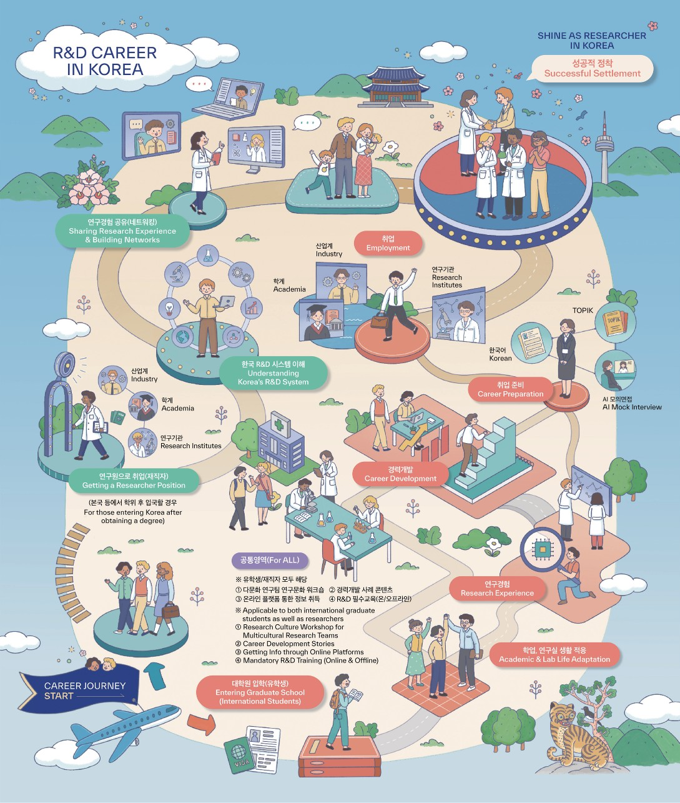

R&D Career in Korea

정착이 쉬워지면, 연구는 더 빛납니다
한국에서 대학원 입학부터 취업, 정착, 경력개발까지
이공계 외국인 연구인력의 전 과정을 함께합니다.
10월 초, 해외연구인력 통합지원 플랫폼 KOLAB이 새롭게 문을 엽니다!
앞으로 해외연구인력사업의 모든 프로그램 신청은 KOLAB을 통해 진행될 예정입니다.
KOLAB에서는 프로그램 신청뿐만 아니라 한국에서의 연구와 생활에 필요한 정착 정보, 경력개발 콘텐츠, 분야별 컨설팅 등 다양한 지원 서비스를 한 곳에서 만나보실 수 있습니다.
한국에서의 연구와 정착, 이제 KOLAB에서 더 쉽고 편리하게!
10월 초 새롭게 시작하는 KOLAB에 많은 관심과 기대 부탁드립니다.
프로그램 한눈에 보기
| 구분 | 경력개발 | 생활지원 |
|---|---|---|
| 대학원생 |
|
대학원생, 재직자 공통 이용 가능 |
| 재직자 |
|
|
| 공통 |
|
연간 일정 (2026년 9월~12월)
※ 운영 일정은 사정에 따라 변동될 수 있으니 신청 전 최신 공지를 다시 확인해 주세요. (각 항목을 클릭하면 해당 프로그램 상세로 이동합니다)
문의 및 지원
담당 사업 부서 연락처
운영기관
국가과학기술인력개발원(KIRD)
모든 프로그램은 과학기술정보통신부 「이공계 해외연구인력 전주기 정착 지원사업」의 일환으로 운영되며, 한국연구재단(NRF)이 관리하고 국가과학기술인력개발원(KIRD)이 수행합니다.
내가 저장한 관심 프로그램
아직 저장한 프로그램이 없습니다. 프로그램 상세 화면에서 ‘관심 프로그램으로 저장’을 눌러보세요.
한국에서 진로 탐색부터 취업 준비까지
한국에서 석·박사 과정 중인 외국인 대학원생이 연구와 진로를 균형있게 준비할 수 있도록 다양한 연구·경력개발 프로그램을 운영합니다.
검색 조건에 맞는 대학원생 프로그램이 없습니다. 다른 검색어를 입력해 보세요.
한국에서 연구자로서의 성장, 그리고 안정적인 적응
박사후연구원, 교원 등 외국인 재직자가 한국의 연구환경을 이해하고 연구역량을 충분히 발휘할 수 있도록 다양한 연구·경력개발 프로그램과 심리지원 서비스를 제공합니다.
검색 조건에 맞는 재직자 프로그램이 없습니다. 다른 검색어를 입력해 보세요.
비자·생활·정서까지, 어디서든 든든하게
이공계 외국인 연구인력의 안정적인 정착을 위해 생활 전반의 어려움을 통합 지원합니다.
검색 조건에 맞는 생활지원서비스가 없습니다. 다른 검색어를 입력해 보세요.
더 많은 소식을 놓치지 마세요
SNS 채널을 팔로우하면 신청 공지와 최신 소식을 가장 빠르게 받아볼 수 있습니다.